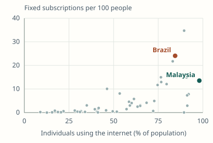

Data Lab · World Development Indicators
Digital Access: Three Measures, Different Stories
Internet use, fixed broadband subscriptions and electricity access across 77 selected economies, 2015–2024.
What changes when we measure who goes online, how many fixed broadband subscriptions exist or who has electricity? The same economy can look different on each measure.
Frozen snapshot retrieved · Methods and data
Internet use grew at different speeds
Internet use increased in all 67 economies with observations in both 2015 and 2024. The median increase was 26.5 percentage points. Ten of the 77 selected economies lacked a reading at one or both endpoints.
Indonesia and India each gained about 50 points. Nigeria and Kenya gained about 19. These four economies illustrate variation within the matched sample.
| Illustrative economy | Percentage points |
|---|---|
| Indonesia | +50.7 |
| India | +50.0 |
| Nigeria | +18.7 |
| Kenya | +18.4 |
More people online can coexist with fewer fixed subscriptions
In 2024, internet use was 98.0% in Malaysia and 84.5% in Brazil. Malaysia had 13.5 fixed broadband subscriptions per 100 people, compared with 24.1 in Brazil.
Internet use counts people going online by any means. Fixed broadband counts subscriptions, which households and organizations can share. The comparison leaves open why the rates differ and how much people rely on mobile access.

Explore the Tableau dashboard
Use Country to compare internet-use trends, or Region and Income Group to filter the 2024 fixed-broadband bars. Hover or tap a mark for its values. The phone layout shortens some axis labels. The figure above spells out both units.
All 40 values in the four default internet-use trends, the 49-point scatterplot count, and the Brazil and Malaysia readings matched the frozen CSV at displayed precision. Full extract and missingness verification is still open.
Electricity access measures population coverage
Access rose from 41.6% to 77.0% in Kenya and from 52.5% to 62.5% in Nigeria. To assess power at a specific facility, look for utility and engineering evidence on outages, firm capacity and energy costs.
| Economy | 2015 | 2024 |
|---|---|---|
| Kenya | 41.6 | 77.0 |
| Nigeria | 52.5 | 62.5 |
Methods, definitions and data
Sample and preparation
The 77-economy selection includes 25 low-income and 47 lower-middle-income economies from the FY2027 classification, plus Brazil, Indonesia, Malaysia, Mexico and Thailand. The same income labels apply to each observation year. This is a targeted sample of economies.
The processing script excludes aggregates, joins WDI values by economy code and year, and validates identifiers and values. The wide file has 770 economy-year rows. The long file has 2,310 indicator rows, with 2,164 reported values and 146 blanks.
Internet-use changes use matched 2015 and 2024 observations. The scatterplot uses complete 2024 pairs. Both exclude missing observations from the relevant comparison and retain reported zeros.
WDI retrieval · API update · Latest common observation year 2024
Indicators and units
- Internet use · IT.NET.USER.ZS
- Percent of people who used the internet from any location in the previous three months.
- Fixed broadband · IT.NET.BBND.P2
- Fixed subscriptions per 100 people, including subscriptions held by households and organizations.
- Electricity access · EG.ELC.ACCS.ZS
- Percent of the population with access to electricity.
Verify the findings
Run python3 scripts/verify_wdi_findings.py from the repository root to check the figures against the frozen CSVs. The verifier uses local files. The original processing script documents the WDI pipeline.
Reading these figures alongside market evidence
These national indicators describe use, subscriptions and electricity access. Questions about data-center commissioning, GPU inventory, cloud service eligibility and workload prices require facility or provider evidence, such as the Azure Indonesia market record and the IndiaAI pricing study.
Archived WDI country spotlight · Indonesia
| Indicator | 2015 | 2024 |
|---|---|---|
| People using the internet (% of population) | 22.1 | 72.8 |
| Fixed broadband subscriptions per 100 people | 1.5 | 4.9 |
| Access to electricity (% of population) | 97.5 | 99.9 |
Indonesia’s largest change here was in internet use. The indicators describe national infrastructure and adoption. The country case uses provider and regulatory documents to examine cloud services and compute access.
In the Tableau trend chart, open Country and select Indonesia. To isolate its line, clear the other selected countries.
Archived evidence table · Five selected project milestones
These curated examples compare the milestone supported by each record. They do not measure total national capacity, market coverage or AI readiness.
Scroll the table horizontally to see the evidence links.
| Economy and access route | Supported milestone | Evidence |
|---|---|---|
| Indonesia · commercial cloud | Operational. Microsoft reported general availability in April 2025. Workload-specific services and quotas need checking. | Indonesia Central record |
| India · shared compute | Program launched. The March 2025 government release describes subsidized access. Realized allocations and wait times are separate questions. | AI Compute Portal record |
| India · local infrastructure | MoU signed for a proposed 150 MW facility. CtrlS links the November agreement to the October letter of intent and identifies the Patna area as its preferred location. | Bihar proposal record |
| Nigeria · local infrastructure | Feasibility study funded. USTDA announced study funding in September 2026 for two proposed sites. | AFRIDATA study record |
| Kenya · local infrastructure | Proposed, with a later delay reported. The cited evidence establishes neither commissioning nor cancellation. | Olkaria proposal record |
Earlier seven-economy connectivity chart · 2024
Connectivity context · Individuals using the Internet
This measures internet use among individuals. It does not measure cloud capacity or access to AI compute.
The interactive chart is unavailable. Enable JavaScript or reload to try again. Download the source observations.